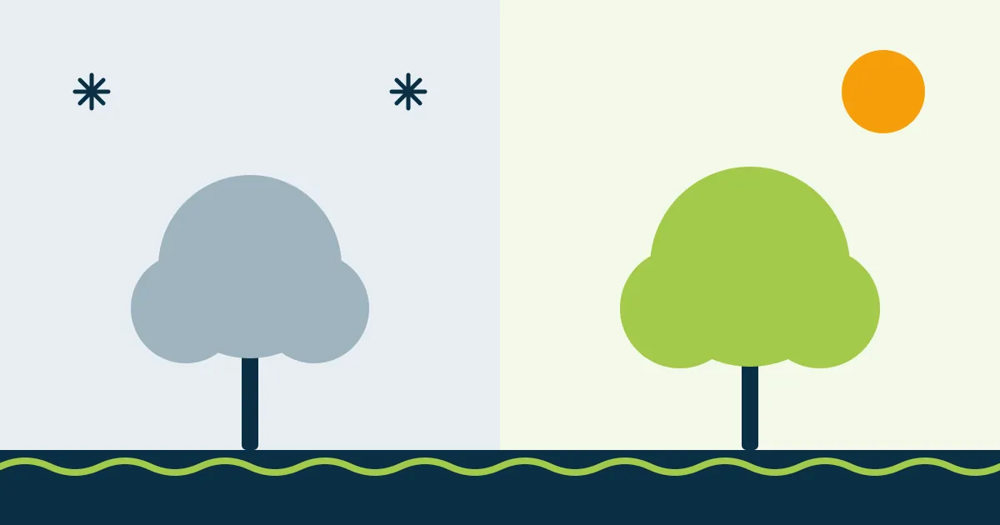

Poda no inverno ou no verão? A época errada pode matar sua árvore

O verão chega, a casa enche de gente, e aquela árvore do quintal está fazendo sombra demais na piscina. Parece a hora perfeita para uma poda caprichada. Só que, para a árvore, pode ser a pior hora do ano.
A época da poda faz diferença na recuperação da planta. Veja quando podar e quando esperar.
Por que a época importa
Toda poda é uma ferida. A árvore precisa de energia para fechar os cortes e repor as folhas perdidas. Essa energia varia ao longo do ano: há meses em que a árvore está em pleno crescimento, florindo ou dando frutos, e meses em que ela “desacelera”.
Outono e inverno: a melhor época para a maioria
No outono e no inverno (de abril a agosto, aproximadamente), muitas espécies entram em dormência ou reduzem o ritmo de crescimento. É o momento mais indicado para a maioria das podas porque:
- a árvore perde menos seiva e sofre menos estresse com os cortes;
- há menos fungos e pragas ativos para infectar as feridas;
- sem tantas folhas, é mais fácil enxergar a estrutura da copa e cortar no lugar certo;
- quando a primavera chega, a árvore rebrota com força e fecha os cortes mais rápido.
Na Região dos Lagos o inverno é ameno, e algumas espécies não chegam a perder as folhas. Mesmo assim, é nessa época que a maioria das árvores está menos ativa.
Quando evitar podar
- Durante a floração e a frutificação: a árvore está gastando energia com flores e frutos. Podar agora é cortar a produção e enfraquecer a planta.
- Na época de ninhos (primavera): muitas aves fazem ninho entre setembro e dezembro. Danificar ninho ocupado é crime ambiental.
- No auge do calor: cortes grandes expõem tronco e galhos ao sol forte, que pode queimar a casca.
As exceções
- Galhos secos, quebrados ou com risco de queda: podem e devem ser retirados em qualquer época. Segurança vem primeiro.
- Frutíferas e floríferas: em geral, o melhor momento é logo depois da colheita ou da floração.
- Palmeiras: a limpeza de folhas secas e cachos pode ser feita o ano todo.
- Antes da temporada de chuvas e ventos: uma poda de limpeza preventiva reduz o risco de queda de galhos.
Poda drástica fora de época: a combinação mais perigosa
Se a poda drástica já é ruim (e, em Cabo Frio, proibida acima de 30% da copa), feita na época errada ela pode ser fatal. A árvore perde a maior parte das folhas justamente quando mais precisa delas, gasta a reserva tentando rebrotar, enfraquece e fica exposta a fungos e cupins. Muitas árvores morrem um ou dois anos depois, e o dono nem associa a morte à poda.
Resumo: planeje as podas maiores para o outono e o inverno, retire galhos perigosos assim que aparecerem e nunca tire mais do que a árvore aguenta de uma vez.
As informações sobre leis e valores refletem a legislação e a prática na data de publicação. Regras municipais podem mudar: confirme sempre com a Secretaria de Meio Ambiente da sua cidade.
Quer resolver isso com segurança?
Mande fotos da árvore pelo WhatsApp e receba uma avaliação e um orçamento da Poda Azul.